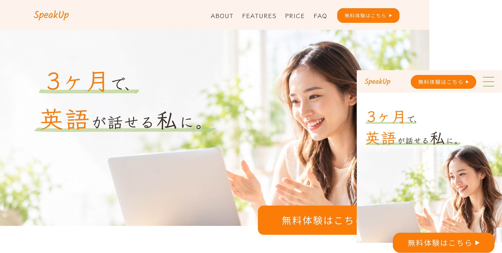

WORK

SpeakUp オンライン英会話LP
DESIGN
SpeakUp オンライン英会話LP（自主制作）
- 目的
- サービスの特徴や3ヶ月間の学習イメージを分かりやすく伝え、無料体験への申し込みにつなげることを目的としました。
- ターゲット
- 20〜30代の働く女性
英語を話せるようになりたいものの、学習時間の確保や継続に不安を感じている方。 - 工夫した点
- オレンジと淡いグリーンを基調に、英会話を始める楽しさや親しみやすさを表現しました。
写真やアイコンを活用し、サービスの特徴や3ヶ月間の学習ステップを視覚的に分かりやすく整理しました。
また、余白や装飾に統一感を持たせ、PC・スマートフォンそれぞれで見やすいレイアウトを意識しました。 - 制作期間
- 約1週間（構成・ワイヤーフレーム・PC/SPデザイン制作）
- 使用言語・ツール
- Figma / Chat GPT(画像生成)